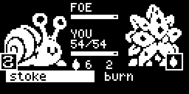
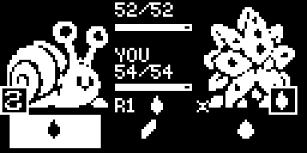
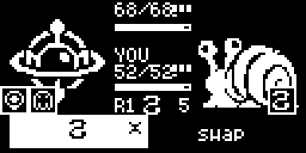
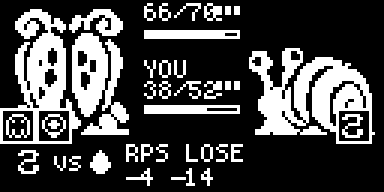
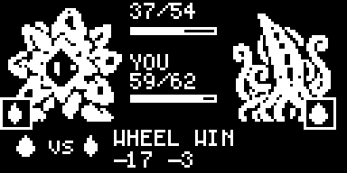

Creature Gatherer battle mock — playable 128×64 design spike · bead 2w8
Each design runs in its own window so they can sit side by side. All use the same roster, generated data, production damage/move-use rules and the same seed if you pass one.
A · current — shipping 8-type dual menu

Baseline: the shipping menu, nothing tells you the matchup. Foe HP hidden like production.
B · trim — 4-type cycle + arrows + press-turn

▲/▼/·/× on every move row (final modifier incl. STAB), optional exact foe HP, optional press-turn extra action, type mode 4-single / 8-single / 8-dual.
C · duel stances — 4-type cycle, hidden picks

Both pick hidden from the 4-type merged cycle (flame/bloom/tide/stone), 3 or 4 stances, affinity ×1.5, ties trade. The original RPS prototype, kept intact.
D · duel power — moves with damage

Both pick hidden from their own creature's equipped moves; the 8-type web decides: win = full hit scaled by move power, lose = blocked + chip, neutral/mirror = trade. Look for: the power number in the centre and ✱ beside it on an affinity pick; lines read WHEEL WIN / WHEEL LOSE. Status/utility moves are excluded, so 17 creatures field fewer than three attack moves today.
E · duel pure RPS — relation only

Same web, same picks, but power, stats and affinity are ignored: win = flat 14, loss = chip 4, trade = 6 both. Look for: no power number, lines read RPS WIN / RPS LOSE, and the ember-vs-ember preview trades for -6 -6.
F · duel bonus — no power + creature-type bonus recommended

Recommended: no power on moves; flat numbers (14 / 4 / 6) with a winning hit ×1.5 when your move's type beats the opposing creature's type. Look for: ↑ on boosting cells and BONUS WIN / BONUS LOSE result lines; ✱ never appears here.
8-type matchup web (row attacks column)
25 beats edges over 8 types, built from four seeded triangles
(fire>plant>water>fire, earth>lightning>water>earth, fire>wind>earth>fire,
plant>spirit>elder>plant) plus solver-completion edges: 16 triangles, 45% of pairs decisive,
the rest deliberately neutral. No immunities. A solver (tools/battle-wheel-solve.mjs)
proves every roster move-set pair has at least one positive matchup; the generator refuses to build
if that fails.
4-type stance cycle (kept demo)
flame > bloom > tide > stone > flame — used by the stance duel window.
| keys in a window | Arrows move cursor | Z / Space A: confirm / advance | X back to setup |
|---|
Variant windows lock their design; number keys 1/2/3 do nothing there. Rerolling a seed in one window
does not change the others. Fidelity: damage/HP/uses/speed/STAB ported from Damage.cpp, Type.hpp and MoveUses.hpp
with stat stages at 0; statuses, effects, party/switch and animations are omitted. Data:
node tools/battle-design-spike-data.mjs · tests: node --test mock/battle-mock.test.js.